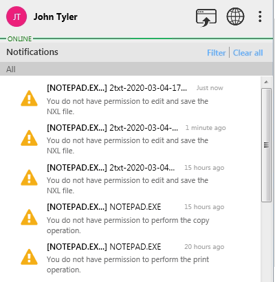

Sample action: Editing and saving a file This sample describes a user who is attempting to edit and save a file in Notepad, but gets denied access. Open a file in Notepad. Edit the file. Save the file. A message appears in the notification area, as shown in the following figure.  Request access to the file owner.